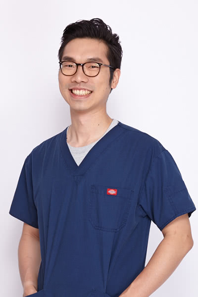
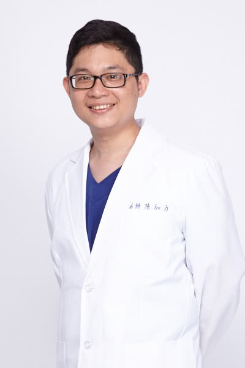

- 前台灣大學附設動物醫院檢驗科約聘獸醫師
- 前台灣大學附設動物醫院小動物內科門診獸醫師
- 前台灣大學附設動物醫院急診獸醫師
- 前台灣大學附設動物醫院傳染病門診獸醫師
- 前台灣大學附設動物醫院內科住院獸醫師
- 台灣小動物醫學會會員
- 國家獸醫師專門職業及技術人員高等考試合格
- 台灣大學獸醫學系學士
- 前台灣大學附設動物醫院腫瘤內科門診獸醫師
- 台大臨床動物醫學研究所碩士
- 國家獸醫師專門職業及技術人員等考試合格
- 台灣大學獸醫學系學士
- 國立中興大學獸醫教學醫院 內科獸醫師
- 日本酪農學園大學獸醫院小動物科短期進修
- 寵物行銷/響片訓練課程結訓
- 寵物照護人員訓練課程講師
- 國立中興大學獸醫所碩士(腫瘤實驗室)
- 前台大臨床動物醫學研究所暨動物醫院內科住院獸醫師
- 前台大附設動物醫院傳染病門診獸醫師
- 台大臨床動物醫學研究所碩士
- 中興獸醫學學士
- 台灣大學獸醫學士
- 前沐恩動物醫院住院獸醫師
- 前恩亞動物醫院主治獸醫師
- 前台大臨床動物醫學研究所暨動物醫院內科住院獸醫師
- 前台大附設動物醫院傳染病門診獸醫師
- 歐洲獸醫高等學院(ESAVS)急診重症加護結業獸醫師
- 台大臨床動物醫學研究所內科碩士
- 台大獸醫學學士
- 雪梨大學獸醫碩士畢業
- 國立中興大學 實習醫生
- 國立中興大學 內科住院獸醫師
- 美國華盛頓州大PAVE（教育同等認正）結業及獸醫執照
- 國泰動物醫院主治獸醫師
- 瑞士伯恩大學 獸醫麻醉科研究見習
- 前維康動物醫院住院、急診、主治獸醫師
- 前長鴻動物醫院主治獸醫師
- 歐洲高級獸醫學會(ESAVA)心臟病學Ⅰ.Ⅱ及心臟超音波研習完畢
- 歐洲高級獸醫學會(ESAVA)軟組織外科學研習完畢
- 歐洲高級獸醫學會(ESAVA)急診及重症加護研習完畢
- 歐洲高級獸醫學會(ESAVA)腎臟病及內外科學研習完畢
- 前台灣大學附設動物醫院小動物牙科專門門診獸醫師
- 前台灣大學附設動物醫院小動物一般外科門診獸醫師
- 前台灣大學附設動物醫院急診獸醫師
- 前台灣大學獸醫學臨床所暨動物醫院外科住院獸醫師
- 台灣小動物醫學會會員
- 國家獸醫師專門職業及技術人員高等考試合格
- 台灣大學獸醫學系學士
- 中興大學獸醫學系臨床組研究所畢業
- 中興大學獸醫教學醫院 實習獸醫師
- 中興大學獸醫教學醫院 外科住院獸醫師
- 前杜專科(恩澤)動物醫院 主治獸醫師
- 前國泰動物醫院 主治獸醫師
- 台大獸醫系畢業
- 台大獸醫研究所臨床組畢業
- 台大外科住院獸醫師訓練
- 永和中山動物醫院主治獸醫師
- 吉米哈利動物醫院主治獸醫師

- 台灣大學獸醫系學士
- 台大臨床動物醫學研究所碩士
- 台大附設動物醫院大動物暨野生動物科住院獸醫師
- 農委會特有生物保育中心野生動物急救站獸醫師
- 2011美國動物園獸醫年會(AAZV)進修
- 2014美國動物園獸醫年會(AAZV)發表研究海報
- 2015歐洲高級獸醫學院(ESAVS)特殊寵物課程翻譯及課程助教
- 2016美國特殊寵物醫學年會(ExoticsCon)進修
- 2016美國國家水族館短期見習訓練

- 台灣大學獸醫系學士
- 台大臨床動物醫學研究所碩士
- 台大附設動物醫院大動物暨野生動物科住院獸醫師
- 2014美國動物園獸醫協會年度會議(AAZV,ARAV,AEMV)
- 2015世界獸醫麻醉及止痛醫學研討會(WCVA)
- 2017世界禽類、兩爬及野生哺乳類醫學研討會（ICARE)
- 台灣大學獸醫系學士
- 台大臨床動物醫學研究所碩士
- 台大附設動物醫院大動物暨野生動科住院獸醫師
- 台大附設動物醫院非犬貓動物科約聘獸醫師
- 台北市立動物園約僱獸醫師
- 日本麻布大學附設動物醫院見習